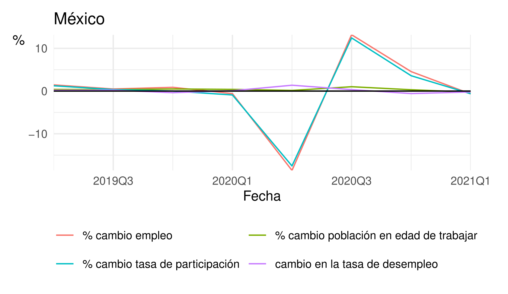
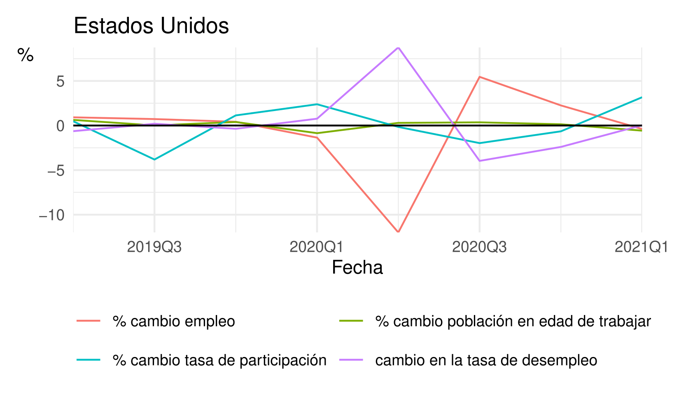

Junio 2021
Trabajar (o no) en pandemia: Comparando Estados Unidos y México
Pablo Derbez Loret de Mola
Mayo 2021
La ayuda económica de los gobiernos como respuesta a la pandemia de COVID-19 ha sido muy variada en intensidad y forma. En México, el gasto adicional ha sido muy bajo (0.2% del PIB) y enfocado en préstamos, mientras que en Estados Unidos ha sido muy alto (22.2% del PIB) y ha incluido transferencias directas y crédito fiscal(International Monetary Fund 2021).
Recientemente, han circulado imágenes de negocios en Estados Unidos que dicen no poder contratar personas, y se ha culpado al apoyo fiscal de esta situación(Associated Press 2021) (Reimann 2021) . ¿En qué medida es esto cierto?
Comencemos con la intuición: la lógica implícita en esta acusación es que la ayuda económica ha hecho que las personas no quieran trabajar. Pero seamos más cuidadosos: la reducción aparente de oferta laboral depende en este momento de varios factores 1) los efectos de los beneficios en el deseo de trabajar de las personas 2) los efectos de los beneficios en la velocidad con la que las personas aceptan trabajos 3) las dificultades en el proceso de búsqueda de empleo debido a la pandemia.
Para este análisis es importante distinguir entre tres categorías: empleo, desempleo, y fuera de la fuerza laboral. Las personas empleadas son quienes trabajan en un momento dado, mientras que las personas desempleadas no tienen un trabajo pero están activamente buscando uno. Juntas, estas dos categorías conforman la fuerza laboral (quienes están dispuestos a trabajar, sin importar si lo hacen o no). Quienes no tienen ni buscan trabajo se encuentran fuera de la fuerza laboral. Esta categoría incluye a estudiantes, retirados y a personas que se dedican a tareas del hogar. Así pues, una persona que deja de trabajar puede pasar al desempleo si sigue buscando empleo, o salir de la fuerza laboral si decide que ya no quiere laborar.
Estas categorías son importantes para describir cómo las personas deciden ofrecer su trabajo. Las tres secciones de este artículo también corresponden a distintas facetas de esta decisión. Primero, las personas deciden si quieren trabajar, es decir, si entran o no a la fuerza laboral. Posteriormente, las personas que decidieron trabajar eligen cómo van a buscar trabajo, en particular, cuánto tiempo están dispuestas a permanecer en el desempleo con tal de buscar un trabajo que ofrezca un mejor salario. Finalmente, el contexto económico más amplio afecta qué tan eficiente es esta búsqueda de trabajo.
Primero, las personas deciden si buscar trabajo o no. Un aumento en los ingresos no laborales, como fue el caso en Estados Unidos, puede aumentar el salario de reserva de las personas (el mínimo salario al cual están dispuestas a trabajar) y por lo tanto reducir la oferta de trabajo. El salario de reserva también puede aumentar si las preferencias de las personas entre consumo y ocio cambian. Es probable que las personas prefieran consumir menos con tal de no tener que trabajar y exponerse al virus. Esto implicaría una caída en la fuerza laboral, pues las personas deciden dejar de trabajar y dejar de buscar empleo. Sin embargo, en Estados Unidos, donde el aumento de los ingresos no laborales fue considerable, la caída del empleo no está relacionada a una contracción de la fuerza laboral. Por el contrario, se observa un aumento correspondiente en el desempleo(U.S. Bureau of Labor Statistics 2021) 1.
A continuación, las personas deciden cuánto tiempo están dispuestas a permanecer en el desempleo con tal de obtener un mejor trabajo. En la medida en que los beneficios recibidos dependan de estar desempleado, es posible que estos funcionen como un incentivo para pasar más tiempo en el desempleo. En efecto, la evidencia empírica parece indicar que una mayor generosidad y duración del seguro de desempleo aumenta la duración de las personas en este estado(Tatsiramos and Ours 2012).
Otro beneficio del desempleo es la posibilidad de quedarse en casa y no exponerse al contagio. Esto también aumentaría el tiempo que las personas están dispuestas a pasar en el desempleo a la espera de una mejor oferta de trabajo. Este mayor tiempo de búsqueda se debe a que las personas rechazan trabajos con paga más baja con la esperanza de recibir una oferta laboral más generosa que justifique la pérdida del seguro de desempleo y de seguridad frente al virus.
La evidencia indica que un seguro de desempleo más generoso y duradero aumenta la duración del mismo y reduce la intensidad de la búsqueda de trabajo(Krueger and Mueller 2010). Tardar más tiempo en salir del desempleo no es necesariamente un problema, siempre y cuando esto permita a las personas encontrar trabajos de mayor calidad. Sin emabrgo, la evidencia sobre los efectos del seguro de desempleo en el salario y estabilidad de los nuevos empleos es mixta(Cahuc, Stéphane, and André 2014, 297). En el caso de México, la falta de un seguro de desempleo generalizado podría verse reflejada en un menor nivel de desempleo si las personas se ven presionadas a aceptar más fácilmente el primer trabajo que se les ofrece. Sin mebargo, como veremos más adelante, no hay evidencia de una diferencia en el tiempo de recuperación del empleo entre Estados Unidos y México.
La curva de Beveridge es una relación entre las vacantes y el desempleo. Entre más cercana esté al orígen en la gráfica, mayor eficiencia en el aparejamiento de trabajos y trabajadores. Dicho de otra forma, entre mayor sea el número de vacantes para un nivel dado de desempleo, más oportunidades de trabajo existen pero no se aprovechan. En Estados Unidos, como se observa en la figura 1, podemos ver un fuerte reacomodo de la curva a partir de abril de 2020 (cada punto es un mes distinto, y la parte morada de la curva es la más reciente). Este reacomodo puede deberse a dos factores: a que las personas estén menos dispuestas a trasladarse para un trabajo dado los riesgos de contraer el virus, o debido a los mayores cuidados en el hogar requeridos en este periodo. Es decir, es posible que hayan personas que estén buscando trabajo pero no puedan aceptar ofertas laborales que no ofrezcan facilidades para que los trabajadores cumplan con sus obligaciones domésticas.
Para México no se cuenta con datos tan detallados, pero Campos-Vazquez, Esquivel, and Badillo (2020) hallan que los anuncios de trabajo disminuyeron momentáneamente en mayo para regresar a niveles anteriores en junio y julio. En este periodo también se registró una brusca disminución en la fuerza laboral seguida de una recuperación incompleta, así como un aumento bastante persistente en el desempleo de alrededor de 1.4 puntos porcentuales(Instituto Nacional de Estadística y Geografía (INEGI) 2021a). Tentativamente, esto podría indicar que en México de hecho hemos pasado a una peor curva de Beveridge, o que esta es muy plana (no hay una relación fuerte entre vacantes y desempleo).
Los cambios en el nivel de empleo se pueden descomponer aproximadamente en la suma del cambio en la fuerza laboral, el cambio en la población en edad de trabajar y el negativo de la tasa de empleo. Es decir, los aumentos en la fuerza laboral y en la población en edad de trabajar tienen una relación positiva con la tasa de empleo, y los aumentos en el desempleo una relación negativa. Esta descomposición la podemos observar para México y Estados Unidos en la figura 3.
En esta gráfica podemos apreciar que prácticamente toda la reducción en el empleo en México se dio porque las personas salieron de la fuerza laboral, y la recuperación observada posteriormente implicó un regreso a la misma. También podemos observar un aumento pequeño en el desempleo. La salida de más de 10 millones de personas de la fuerza laboral que se observa en el segundo trimestre del año a su vez se ve reflejada en un aumento de más de 11.5 millones de la población no activa disponible.2 (Instituto Nacional de Estadística y Geografía (INEGI) 2021b) Las personas que se catalogan como "disponibles" no trabajaron y no buscaron trabajo porque consideran que las circunstancias no se lo permiten, pero tienen interés en trabajar.
El caso de EE. UU. es muy distinto; observamos que la mayor parte de las pérdidas de empleos se tradujeron en un aumento en el desempleo, aunque una fracción significativa sí salió de la fuerza laboral. Los efectos del crecimiento de la población en edad de trabajar son más insignificantes para Estados Unidos. En resumen, observamos que para trayectorias muy similares del empleo, para México esto se ha traducido en una menor fuerza laboral y para Estados Unidos en un mayor desempleo.
 
Tanto en EE.UU como en México la crisis del COVID-19 está asociada a una caída en el empleo. En ambas economías esto también ha generado un mayor desempleo y una caída de la fuerza laboral, pero en proporciones muy distintas. Si bien hay muchos factores que podrían estar detrás de éstas diferencias3, el distinto nivel de apoyo económico de los gobiernos frente a la pandemia es el más notorio y relevante.
Por otro lado, el aumento de la población no activa disponible nos indica que en México quienes salieron de la fuerza laboral sí tenían interés en trabajar. Verse obligado a salir de la fuerza laboral en lugar de continuar en la búsqueda de trabajo puede tener consecuencias a mediano y largo plazo: por ejemplo, el Banco de México reportó que en 2020 aumentó el porcentaje de personas que fueron recontratadas en el mismo registro patronal del IMSS con un menor sueldo.(“Recontrataciones En El Mercado Laboral Formal En Las Regiones de México En El Contexto de La Pandemia de COVID-19” 2020) Podría ser que un seguro de desempleo ayude a las personas a superar las barreras que no les permiten buscar trabajo.
Las personas que dejan de estar empleadas pueden estar desempleadas (sin trabajo pero buscando) o fuera de la fuerza laboral (sin trabajo y sin buscar trabajo)↩︎
Esto es mayor a la reducción de 10 millones de empleados porque se vio acompañado de una reducción de más de 1.5 millones de la población no activa no disponible↩︎
Por ejemplo, diferencias en el nivel de esfuerzo de reclutamiento de las empresas, diferencias en la tasa de interés o en la tasa de destrucción de empleos, o una menor abundancia de trabajos con salarios altos.↩︎